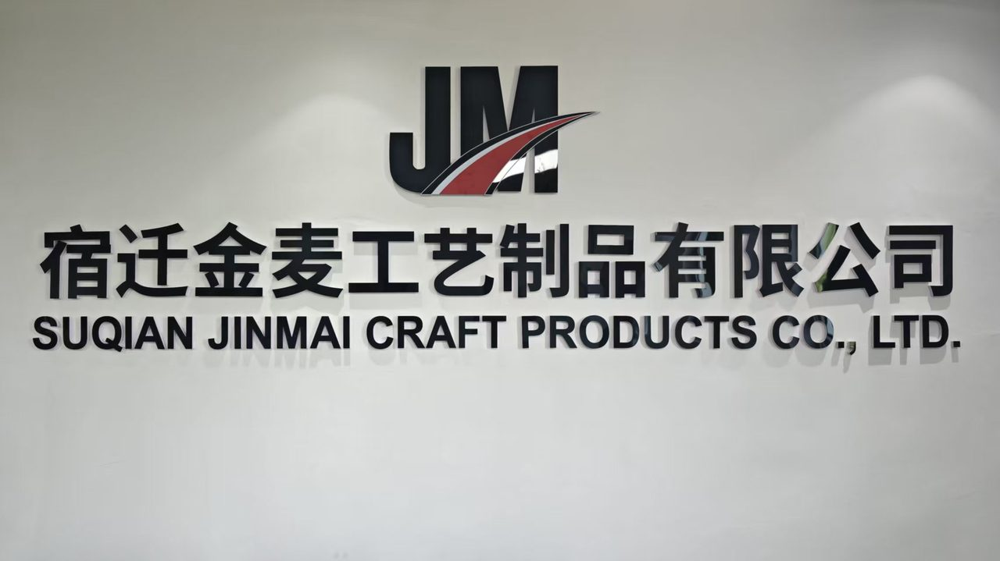

宿迁金麦工艺制品有限公司成立于工艺制造之乡江苏宿迁，是一家集研发、生产、销售于一体的仿真花专业企业。我们坚信，美不应随时间凋零——仿真花让繁花常驻，让绿意常在。
十余年来，金麦从一间小型作坊成长为拥有自有生产线与成熟研发团队的制造企业，产品覆盖全国三十余个省市，并远销海外多个地区，广泛应用于家居、婚庆、酒店、商场与市政景观。
作为江苏宿迁仿真花源头厂家，金麦依托本地成熟的工艺产业链，提供仿真花束、绿植盆栽、花墙背景与整体花艺软装的一站式供应，支持跨境批发、外贸出口与 OEM/ODM 来样定制，是家居、婚庆、酒店与商场采购仿真花的首选合作伙伴。

于宿迁成立小型工艺作坊，以手工仿真花束切入市场。
引入模具压花与环保染整工艺，实现规模化生产。
开通电商与批发渠道，产品覆盖全国主要省市。
进军酒店、商场与婚庆花艺软装，提供整体方案。
全新品牌形象上线，迈向“工艺 + 设计”双驱动。
不将就每一片花瓣。从选材到成型，以手工艺的标准对待工业制造。
以“以假乱真”为追求，让仿真花在光影里拥有生命的温度。
做时间的朋友。用耐看、耐用的产品，换客户长久的信赖。